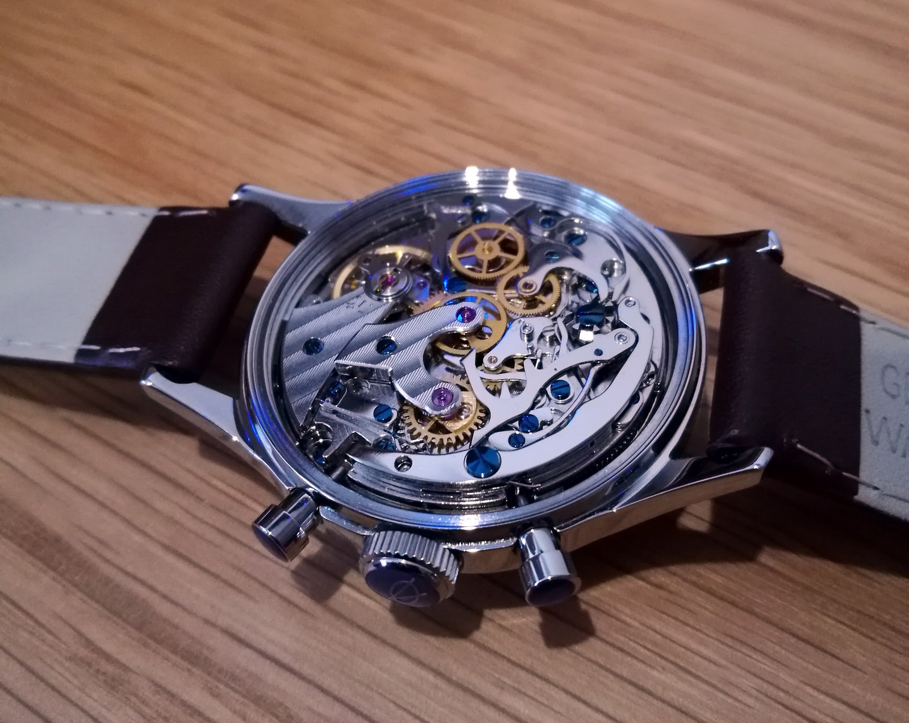
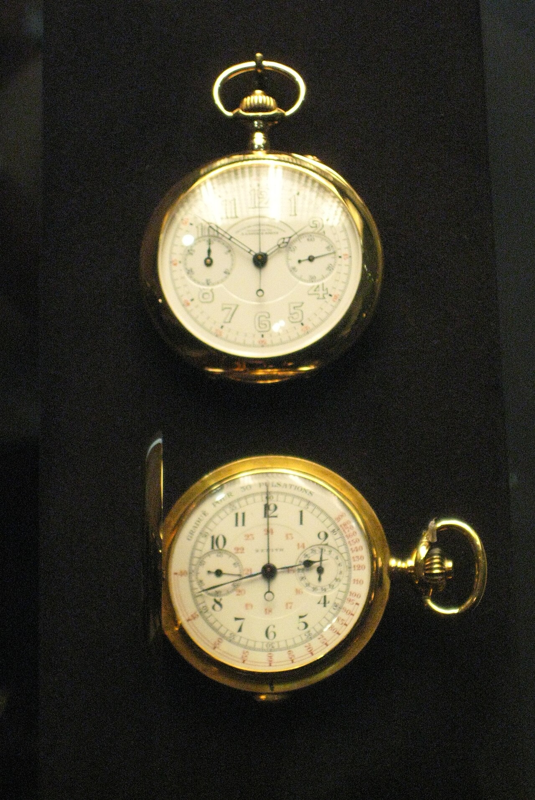
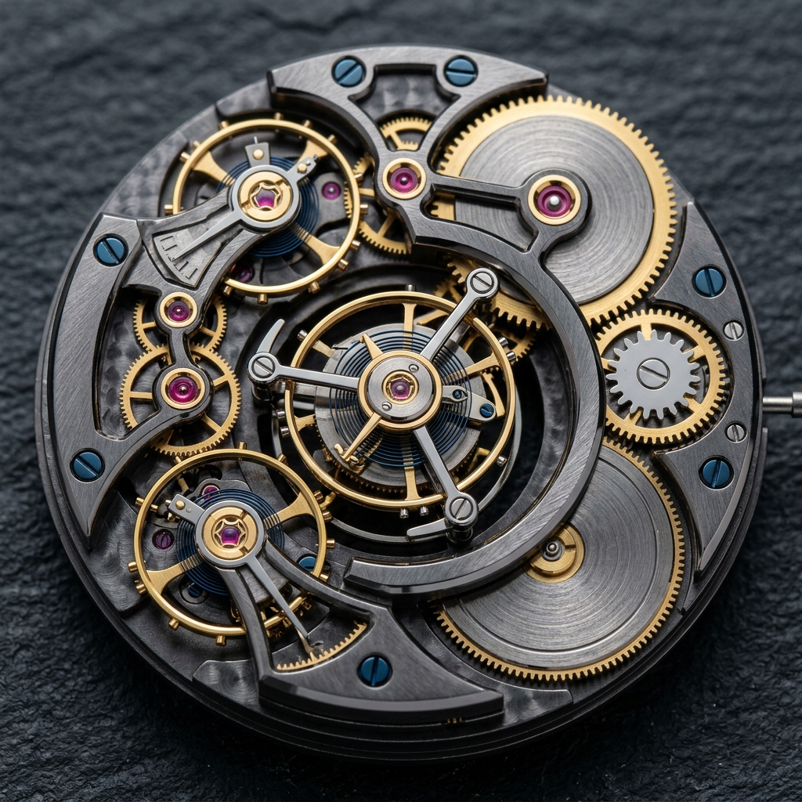
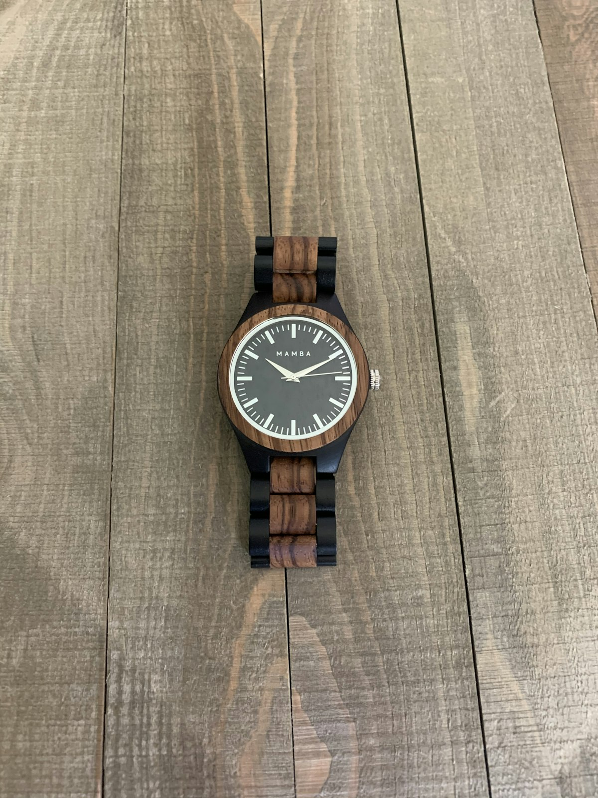

Epicycloidal Gear Train Kinetics
Mathematical analysis of epicycloidal tooth profiles, torque transmission kinetics, and friction reduction in mechanical watches.

Column Wheel vs. Cam Chronographs
Comparative study of lateral clutch friction, tactile column actuation, and long-term pillar wear in vintage chronographs.

The Tourbillon: Gravitational Neutralization
Rotational inertia physics, carriage balance dynamics, and positional rate variation elimination across five positions.

Synthetic Ruby Jewel Friction Tribology
Corundum crystallography, endstone micro-clearances, and epilamization boundary lubrication in watch pivot arbors.
Isochronism & Breguet Overcoil Hairsprings
Non-linear elasticity mathematics, terminal curve geometry, and thermal compensation in variable inertia balance wheels.

Black Polishing & Haute Horlogerie Finishing
Optical physics of specular steel polishing on zinc laps, hand-beveled anglâge, and Geneva stripe decoration.